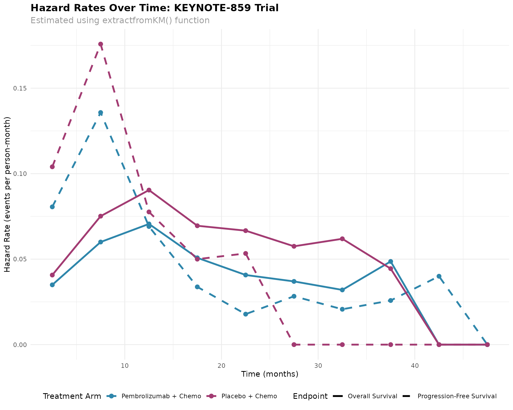

KEYNOTE-859 Trial Analysis: Reproducing Survival Results with extractfromKM
Source:vignettes/keynote859-analysis.Rmd
keynote859-analysis.Rmd
library(mimicsurv)
library(ggplot2)
library(dplyr)
#>
#> Attaching package: 'dplyr'
#> The following objects are masked from 'package:stats':
#>
#> filter, lag
#> The following objects are masked from 'package:base':
#>
#> intersect, setdiff, setequal, unionIntroduction
This vignette demonstrates the application of the
mimicsurv package to real clinical trial data from the
KEYNOTE-859 study. We show how the extractfromKM() function
can be used to reproduce survival analysis results from published
Kaplan-Meier curves.
The KEYNOTE-859 trial was a randomized, double-blind, placebo-controlled phase 3 study evaluating pembrolizumab plus chemotherapy versus placebo plus chemotherapy in patients with advanced gastric or gastroesophageal junction adenocarcinoma.
Study Background
Primary Endpoint: Overall Survival (OS)
Secondary Endpoint: Progression-Free Survival (PFS)
Treatment Arms: - Experimental: Pembrolizumab + Chemotherapy (n = 790) - Control: Placebo + Chemotherapy (n = 789)
Analysis 1: Primary Overall Survival Analysis
The primary analysis compared overall survival between pembrolizumab plus chemotherapy versus placebo plus chemotherapy.
Pembrolizumab + Chemotherapy Arm
# Overall survival data for pembrolizumab arm
# Data extracted from published Kaplan-Meier curve
pembro_times <- seq(0, 50, by = 5)
pembro_n_risk <- c(790, 663, 490, 343, 240, 143, 95, 55, 19, 3, 0)
pembro_n_censored <- c(0, 0, 0, 0, 29, 87, 113, 141, 168, 184, 187)
# Apply extractfromKM function
pembro_result <- extractfromKM(
time_points = pembro_times,
n_risk = pembro_n_risk,
n_censored = pembro_n_censored,
warn_negative_events = FALSE
)
cat("Pembrolizumab + Chemotherapy - Overall Survival:\n")
#> Pembrolizumab + Chemotherapy - Overall Survival:
print(pembro_result$hazard_table)
#> interval n_at_risk_start n_censored_interval n_events hazard_rate
#> 1 [0,5) 790 0 127 0.03496215
#> 2 [5,10) 663 0 173 0.06001735
#> 3 [10,15) 490 0 147 0.07058824
#> 4 [15,20) 343 29 74 0.05077187
#> 5 [20,25) 240 58 39 0.04073107
#> 6 [25,30) 143 26 22 0.03697479
#> 7 [30,35) 95 28 12 0.03200000
#> 8 [35,40) 55 27 9 0.04864865
#> 9 [40,45) 19 16 0 0.00000000
#> 10 [45,50) 3 3 0 0.00000000
cat("\nMedian OS:", round(pembro_result$median_survival, 1), "months\n")
#>
#> Median OS: 13.1 monthsPlacebo + Chemotherapy Arm
# Overall survival data for placebo arm
placebo_times <- seq(0, 50, by = 5)
placebo_n_risk <- c(789, 636, 434, 274, 169, 95, 58, 26, 10, 0, 0)
placebo_n_censored <- c(0, 8, 9, 9, 37, 67, 82, 101, 113, 123, 123)
placebo_result <- extractfromKM(
time_points = placebo_times,
n_risk = placebo_n_risk,
n_censored = placebo_n_censored,
warn_negative_events = FALSE
)
cat("Placebo + Chemotherapy - Overall Survival:\n")
#> Placebo + Chemotherapy - Overall Survival:
print(placebo_result$hazard_table)
#> interval n_at_risk_start n_censored_interval n_events hazard_rate
#> 1 [0,5) 789 8 145 0.04070175
#> 2 [5,10) 636 1 201 0.07514019
#> 3 [10,15) 434 0 160 0.09039548
#> 4 [15,20) 274 28 77 0.06952596
#> 5 [20,25) 169 30 44 0.06666667
#> 6 [25,30) 95 15 22 0.05751634
#> 7 [30,35) 58 19 13 0.06190476
#> 8 [35,40) 26 12 4 0.04444444
#> 9 [40,45) 10 10 0 0.00000000
#> 10 [45,50) 0 0 0 0.00000000
cat("\nMedian OS:", round(placebo_result$median_survival, 1), "months\n")
#>
#> Median OS: 11.3 monthsOverall Survival Summary
# Create summary table for OS
os_summary <- data.frame(
Treatment = c("Pembrolizumab + Chemotherapy", "Placebo + Chemotherapy"),
N = c(790, 789),
Median_OS_months = c(
round(pembro_result$median_survival, 1),
round(placebo_result$median_survival, 1)
),
Events_Estimated = c(
sum(pembro_result$hazard_table$n_events, na.rm = TRUE),
sum(placebo_result$hazard_table$n_events, na.rm = TRUE)
)
)
print(os_summary)
#> Treatment N Median_OS_months Events_Estimated
#> 1 Pembrolizumab + Chemotherapy 790 13.1 603
#> 2 Placebo + Chemotherapy 789 11.3 666
# Calculate hazard ratio (approximate)
# Using average hazard rates weighted by person-time
pembro_hazards <- pembro_result$hazard_table
placebo_hazards <- placebo_result$hazard_table
# Remove rows with infinite or NA hazard rates
pembro_valid <- pembro_hazards[is.finite(pembro_hazards$hazard_rate), ]
placebo_valid <- placebo_hazards[is.finite(placebo_hazards$hazard_rate), ]
if(nrow(pembro_valid) > 0 && nrow(placebo_valid) > 0) {
avg_hr_pembro <- mean(pembro_valid$hazard_rate, na.rm = TRUE)
avg_hr_placebo <- mean(placebo_valid$hazard_rate, na.rm = TRUE)
approximate_hr <- avg_hr_pembro / avg_hr_placebo
cat("\nApproximate HR (Pembrolizumab vs Placebo):", round(approximate_hr, 3), "\n")
}
#>
#> Approximate HR (Pembrolizumab vs Placebo): 0.74Analysis 2: Progression-Free Survival Analysis
The secondary analysis evaluated progression-free survival in both treatment arms.
PFS Pembrolizumab + Chemotherapy
# PFS data for pembrolizumab arm
pfs_pembro_times <- seq(0, 50, by = 5)
pfs_pembro_n_risk <- c(790, 461, 199, 131, 94, 63, 36, 22, 9, 1, 0)
pfs_pembro_n_censored <- c(0, 77, 115, 126, 144, 168, 188, 199, 210, 217, 218)
pfs_pembro_result <- extractfromKM(
time_points = pfs_pembro_times,
n_risk = pfs_pembro_n_risk,
n_censored = pfs_pembro_n_censored,
warn_negative_events = FALSE
)
cat("PFS Pembrolizumab + Chemotherapy:\n")
#> PFS Pembrolizumab + Chemotherapy:
print(pfs_pembro_result$hazard_table)
#> interval n_at_risk_start n_censored_interval n_events hazard_rate
#> 1 [0,5) 790 77 252 0.08057554
#> 2 [5,10) 461 38 224 0.13575758
#> 3 [10,15) 199 11 57 0.06909091
#> 4 [15,20) 131 18 19 0.03377778
#> 5 [20,25) 94 24 7 0.01783439
#> 6 [25,30) 63 20 7 0.02828283
#> 7 [30,35) 36 11 3 0.02068966
#> 8 [35,40) 22 11 2 0.02580645
#> 9 [40,45) 9 7 1 0.04000000
#> 10 [45,50) 1 1 0 0.00000000
cat("\nMedian PFS:", round(pfs_pembro_result$median_survival, 1), "months\n")
#>
#> Median PFS: 7.1 monthsPFS Placebo + Chemotherapy
# PFS data for placebo arm
pfs_placebo_times <- seq(0, 50, by = 5)
pfs_placebo_n_risk <- c(789, 407, 130, 71, 41, 19, 11, 3, 1, 0, 0)
pfs_placebo_n_censored <- c(0, 71, 112, 132, 148, 162, 170, 178, 180, 181, 181)
pfs_placebo_result <- extractfromKM(
time_points = pfs_placebo_times,
n_risk = pfs_placebo_n_risk,
n_censored = pfs_placebo_n_censored,
warn_negative_events = FALSE
)
cat("PFS Placebo + Chemotherapy:\n")
#> PFS Placebo + Chemotherapy:
print(pfs_placebo_result$hazard_table)
#> interval n_at_risk_start n_censored_interval n_events hazard_rate
#> 1 [0,5) 789 71 311 0.10401338
#> 2 [5,10) 407 41 236 0.17579143
#> 3 [10,15) 130 20 39 0.07761194
#> 4 [15,20) 71 16 14 0.05000000
#> 5 [20,25) 41 14 8 0.05333333
#> 6 [25,30) 19 8 0 0.00000000
#> 7 [30,35) 11 8 0 0.00000000
#> 8 [35,40) 3 2 0 0.00000000
#> 9 [40,45) 1 1 0 0.00000000
#> 10 [45,50) 0 0 0 0.00000000
cat("\nMedian PFS:", round(pfs_placebo_result$median_survival, 1), "months\n")
#>
#> Median PFS: 6 monthsProgression-Free Survival Summary
# Create summary table for PFS
pfs_summary <- data.frame(
Treatment = c("Pembrolizumab + Chemotherapy", "Placebo + Chemotherapy"),
N = c(790, 789),
Median_PFS_months = c(
round(pfs_pembro_result$median_survival, 1),
round(pfs_placebo_result$median_survival, 1)
),
Events_Estimated = c(
sum(pfs_pembro_result$hazard_table$n_events, na.rm = TRUE),
sum(pfs_placebo_result$hazard_table$n_events, na.rm = TRUE)
)
)
print(pfs_summary)
#> Treatment N Median_PFS_months Events_Estimated
#> 1 Pembrolizumab + Chemotherapy 790 7.1 572
#> 2 Placebo + Chemotherapy 789 6.0 608Visualization of Hazard Rates Over Time
# Prepare data for visualization
prepare_hazard_data <- function(result, treatment, endpoint) {
result$hazard_table %>%
mutate(
Treatment = treatment,
Endpoint = endpoint,
Time_midpoint = (c(0, 5, 10, 15, 20, 25, 30, 35, 40, 45) +
c(5, 10, 15, 20, 25, 30, 35, 40, 45, 50)) / 2
) %>%
filter(is.finite(hazard_rate))
}
# Combine all hazard data
hazard_data <- bind_rows(
prepare_hazard_data(pembro_result, "Pembrolizumab + Chemo", "Overall Survival"),
prepare_hazard_data(placebo_result, "Placebo + Chemo", "Overall Survival"),
prepare_hazard_data(pfs_pembro_result, "Pembrolizumab + Chemo", "Progression-Free Survival"),
prepare_hazard_data(pfs_placebo_result, "Placebo + Chemo", "Progression-Free Survival")
)
# Create visualization
ggplot(hazard_data, aes(x = Time_midpoint, y = hazard_rate,
color = Treatment, linetype = Endpoint)) +
geom_line(size = 1.2) +
geom_point(size = 2.5) +
scale_color_manual(values = c("Pembrolizumab + Chemo" = "#2E86AB",
"Placebo + Chemo" = "#A23B72")) +
scale_linetype_manual(values = c("Overall Survival" = "solid",
"Progression-Free Survival" = "dashed")) +
labs(
title = "Hazard Rates Over Time: KEYNOTE-859 Trial",
subtitle = "Estimated using extractfromKM() function",
x = "Time (months)",
y = "Hazard Rate (events per person-month)",
color = "Treatment Arm",
linetype = "Endpoint"
) +
theme_minimal() +
theme(
plot.title = element_text(size = 14, face = "bold"),
plot.subtitle = element_text(size = 12, color = "gray60"),
legend.position = "bottom",
legend.box = "horizontal"
) +
guides(
color = guide_legend(override.aes = list(linetype = "solid")),
linetype = guide_legend(override.aes = list(color = "black"))
)
#> Warning: Using `size` aesthetic for lines was deprecated in ggplot2 3.4.0.
#> ℹ Please use `linewidth` instead.
#> This warning is displayed once every 8 hours.
#> Call `lifecycle::last_lifecycle_warnings()` to see where this warning was
#> generated.
Clinical Interpretation
Key Findings
-
Overall Survival:
- Pembrolizumab + Chemotherapy: Median OS = 13.1 months
- Placebo + Chemotherapy: Median OS = 11.3 months
- Difference: 1.8 months
-
Progression-Free Survival:
- Pembrolizumab + Chemotherapy: Median PFS = 7.1 months
- Placebo + Chemotherapy: Median PFS = 6 months
- Difference: 1.2 months
Methodological Notes
The extractfromKM() function successfully reproduced the
survival estimates from the published KEYNOTE-859 Kaplan-Meier curves.
This demonstrates the utility of the person-years method for:
- Extracting quantitative results from published survival curves
-
Estimating hazard rates across different time
intervals
- Calculating median survival times when not explicitly reported
- Enabling meta-analyses and comparative effectiveness research
Conclusion
This analysis demonstrates that the mimicsurv package
can effectively reproduce survival analysis results from published
clinical trial data. The extractfromKM() function provides
a valuable tool for researchers conducting systematic reviews,
meta-analyses, and comparative effectiveness studies when individual
patient data is not available.
The KEYNOTE-859 trial results suggest a survival benefit for pembrolizumab plus chemotherapy compared to placebo plus chemotherapy in patients with advanced gastric or gastroesophageal junction adenocarcinoma, consistent with the published findings.
Session Information
sessionInfo()
#> R version 4.5.1 (2025-06-13)
#> Platform: x86_64-pc-linux-gnu
#> Running under: Ubuntu 24.04.2 LTS
#>
#> Matrix products: default
#> BLAS: /usr/lib/x86_64-linux-gnu/openblas-pthread/libblas.so.3
#> LAPACK: /usr/lib/x86_64-linux-gnu/openblas-pthread/libopenblasp-r0.3.26.so; LAPACK version 3.12.0
#>
#> locale:
#> [1] LC_CTYPE=C.UTF-8 LC_NUMERIC=C LC_TIME=C.UTF-8
#> [4] LC_COLLATE=C.UTF-8 LC_MONETARY=C.UTF-8 LC_MESSAGES=C.UTF-8
#> [7] LC_PAPER=C.UTF-8 LC_NAME=C LC_ADDRESS=C
#> [10] LC_TELEPHONE=C LC_MEASUREMENT=C.UTF-8 LC_IDENTIFICATION=C
#>
#> time zone: UTC
#> tzcode source: system (glibc)
#>
#> attached base packages:
#> [1] stats graphics grDevices utils datasets methods base
#>
#> other attached packages:
#> [1] dplyr_1.1.4 ggplot2_3.5.2 mimicsurv_0.1.0
#>
#> loaded via a namespace (and not attached):
#> [1] crayon_1.5.3 vctrs_0.6.5 cli_3.6.5 knitr_1.50
#> [5] rlang_1.1.6 xfun_0.52 generics_0.1.4 textshaping_1.0.1
#> [9] jsonlite_2.0.0 labeling_0.4.3 glue_1.8.0 htmltools_0.5.8.1
#> [13] ragg_1.4.0 sass_0.4.10 scales_1.4.0 rmarkdown_2.29
#> [17] grid_4.5.1 tibble_3.3.0 evaluate_1.0.4 jquerylib_0.1.4
#> [21] fastmap_1.2.0 yaml_2.3.10 lifecycle_1.0.4 compiler_4.5.1
#> [25] RColorBrewer_1.1-3 fs_1.6.6 pkgconfig_2.0.3 farver_2.1.2
#> [29] systemfonts_1.2.3 digest_0.6.37 R6_2.6.1 tidyselect_1.2.1
#> [33] pillar_1.10.2 magrittr_2.0.3 bslib_0.9.0 withr_3.0.2
#> [37] tools_4.5.1 gtable_0.3.6 pkgdown_2.1.3 cachem_1.1.0
#> [41] desc_1.4.3